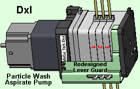

Installing Particle Wash Aspirate Peristaltic Pump
This procedure describes how to install the particle wash aspirate peristaltic pump into the instrument.
These critical warnings apply to the particle wash aspirate pump cartridges on all DxI instruments .
Warning: The position of the cassettes is critical for correct pump operation in the old-style particle wash aspirate pumps. The positions are numbered 1 to 3 beginning at the motor end. Maintain this orientation. Number existing cartridges in fielded instruments using a permanent marker.
Warning: Cassettes are not identical. The dimensions of each cassette can vary slightly from one cartridge to another. Once a cassette is installed in a pump and is functioning correctly, it is matched to the pump.
- Do not move cassettes to a different position within the pump.
- Do not move cassettes to different pump.
- Do not replace cassettes with another cassette of the same style.
Replace cassettes by installing a replacement pump head.
Warning: Do not place a redesigned lever guard from a pump head with factory-numbered cassettes, on a peristaltic pump with an original lever guard. The width of the slot is narrower on the redesigned lever guard. The narrower slot could allow a cassette to 'click' one or more positions tighter or looser, which could cause tubing damage or loss of pumping action.

Caution: Use caution when replacing tubing. Do not twist the tubing in the pump once it is replaced.
Caution: If a pump has no issues related to the cartridges, then leave the cartridges where they are and number the cartridges using the above numbering scheme.
- Remove power from the pump by using the switch on the Power Distribution PCB labeled "All DC power (except CPU and reagent coolers)".
-
Install the peristaltic pump.
-
For the fluid outlet manifold locations A or B, connect the three peristaltic pump tubes to the fluid outlet manifold in any order.
Note: The fluids outlet manifold may be in either of the two locations shown in the drawing.Note: For fluid outlet manifold location A only, connect the large waste tubing to the large fitting on the fluid outlet manifold.

-
For the fluid outlet manifold locations A or B, connect the three peristaltic pump tubes to the fluid outlet manifold in any order.
- Apply power to the pump using the switch on the Power Distribution PCB labeled "All DC power (except CPU and Reagent Coolers)".
- Initialize the system.
- Prime the dispense probes three cycles while verifying correct fluid aspiration through each aspirate probe tube.
-
Verify system operation.